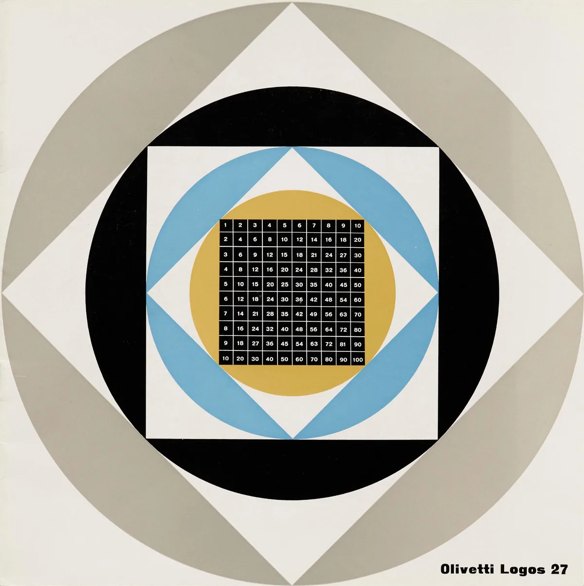
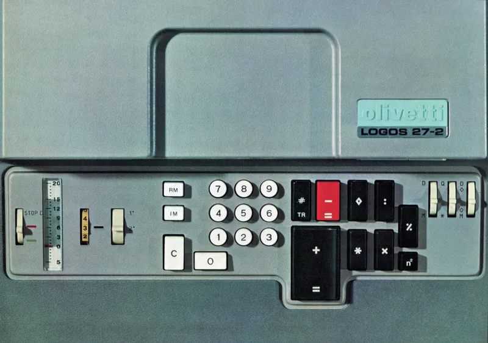
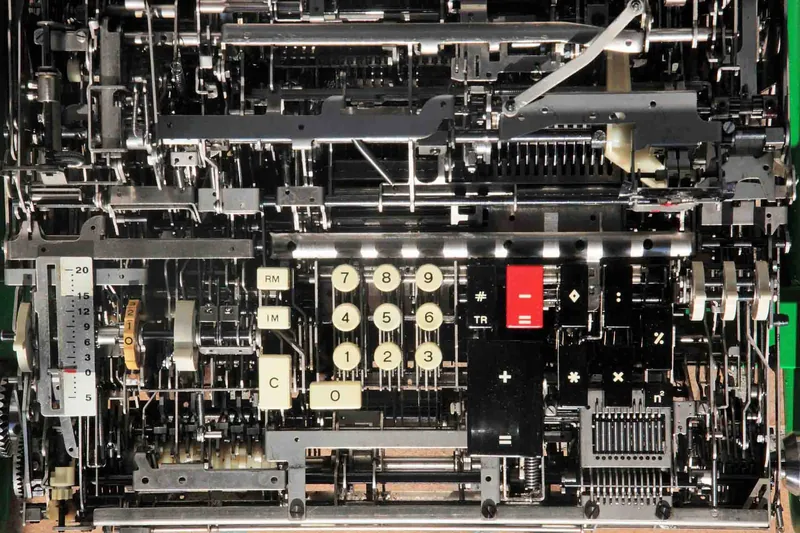
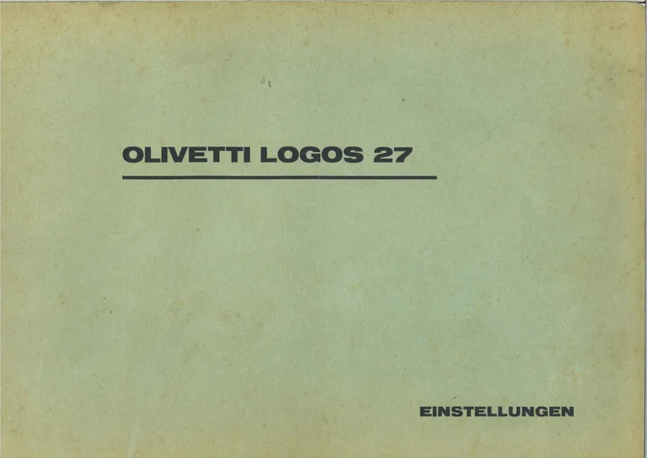

Logos 27
«Un gioiello di genialità e creatività».

PDFLa Logos 27 in quattro articoli su notizie olivetti.
> La “Logos” e il mercato delle calcolatrici. Un articolo di Francesco Mascaro, del Centro Studi Olivetti.
> Il progetto della “Logos”. Una nota di Teresio Gassino, che con un gruppo di collaboratori ha progettato questa macchina.
> Il design della “Logos”. Un articolo dell’architetto Ettore Sottsass jr., che ha realizzato la carrozzeria della nuova calcolatrice Olivetti.
> Dove si produce la “Logos”.
Fonte: notizie olivetti, n. 85, dicembre 1965, Ufficio Stampa Olivetti, pp. 32–49.

PDFOlivetti Logos 27-2, opuscolo informativo (1967).
Un opuscolo con grafica di Giovanni Pintori presentava la versione 27-1 della Logos (1966, pdf disponibile in lingua olandese). Una sequenza video presentava la Logos insieme ad altri prodotti Olivetti (link).
Fonte: Olivetti Logos 27-2, Internet Archive, Olivetti Logos 27, Letterform Archive, consultati nel novembre 2020.

↗ LinkRanimer une belle mécanique, la super-calculatrice Logos 27-2 (2013, lingua francese).
Straordinario lavoro di studio, ingegneria inversa e rimessa in funzione di una Logos 27-2 da parte dell’ingegnere e appassionato di macchine da calcolo meccaniche Philippe Bastide. Al lavoro hanno contribuito le conoscenze di Alain Billerey, collezionista di macchine da calcolo (a questo link video è riconoscibile mentre mostra in funzione Logos, Divisumma e Tetractys della sua collezione).
Fonte: L’oeil numérique, archiviato su Internet Archive nel luglio 2019.

↗ LinkOlivetti Logos 27 Einstellungen, manuale delle regolazioni (1968, lingua tedesca).
Il tecnico STAC (Servizio Tecnico Assistenza Clienti) aveva a disposizione, oltre al manuale delle regolazioni, una Guida localizzazione parti (1969, link) con coordinate spaziali per orientarsi tra le sezioni della macchina e diagnosticare con precisione un malfunzionamento sul manuale di ricerca guasti (Logos 27-2 Fehlersuche, 1968, link in lingua tedesca).
Fonte: Internet Archive, link consultati nell’agosto 2026.